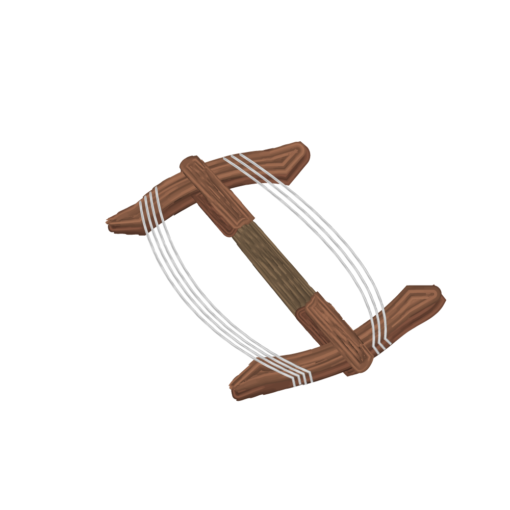
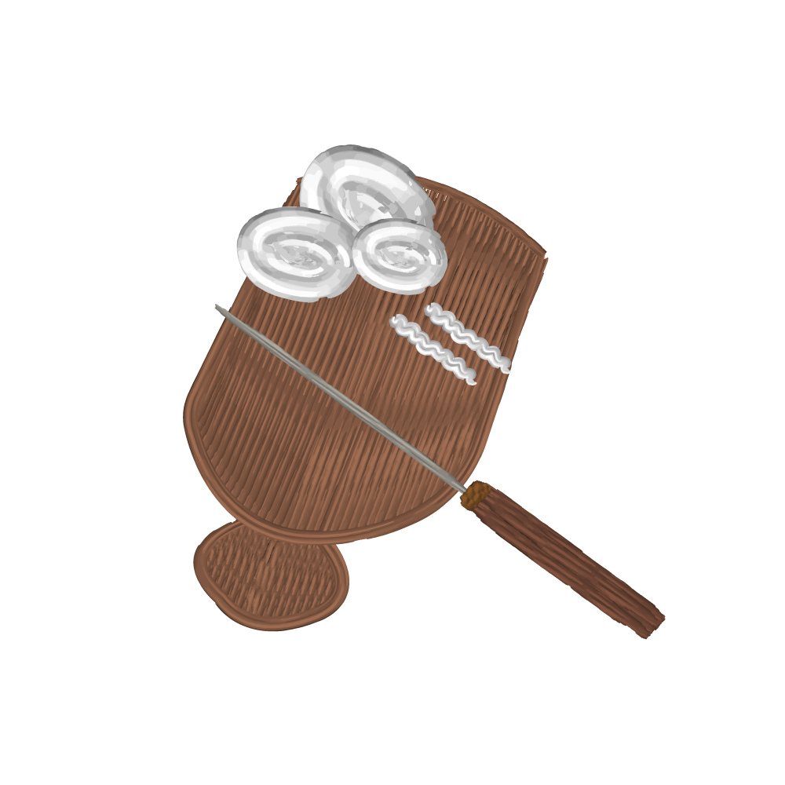

Welcome to
TheCharmsOf
KalasinThaiTextileArtistry

ลักษณะผ้าแพรวา
แพรวา หรือ ผ้าไหมแพรวา เป็นผ้าทอมืออันเป็นเอกลักษณ์ของชาวผู้ไทยหรือภูไท การทอผ้าแพรวามีมาพร้อมกับวัฒนธรรมของชาวภูไท ที่มีภูมิปัญญาในการทอด้วยการเก็บลายจากการเก็บขิด และการจกที่มีลวดลายโดดเด่น นับเป็นภูมิปัญญาที่ได้รับ การถ่ายทอดมาจากบรรพบุรุษและพัฒนามาอย่างต่อเนื่อง ผ้าแพรวาจึงเหมือนเป็นสัญลักษณ์ของกลุ่มชนที่สืบเชื้อสาย มาจากกลุ่มผู้ไท
ความเชื่อที่มีต่อลวดลายผ้าแพรวา
- 
ประเภทพืชพันธุ์พฤกษา การนำความหมายของดอกไม้ หรือพืชพันธุ์พฤกษาจะหมายถึง ความรัก ความสดชื่น ความเจริญรุ่งเรือง การนำไปสักการบูชา ได้แก่ ลายช่อดอกไม้ ลายต้นสน ลายดอกบัว ลายดอกกระบวน ลายดอกใบบุ่น (ดอกไม้ไม่มีวันตาย) ลายกาบแขด ลายจันกิ่ง ลายพันมหา (ดอกไม้ใหญ่) ผู้สวมใส่จะมีความรู้สึกสง่างาม อ่อนหวาน และมีความสุขอายุยืน
ประเภทสัตว์ การสื่อความหมายเกี่ยวกับตัวสัตว์ ลายสัตว์เลื้อยคลาน สัตว์ครึ่งบกครึ่งน้ำ เช่น นาค งู และปู สัตว์สี่เท้า มีลายอุ้มตีนหมา ลายที่เกี่ยวกับแมลง เช่น ลายตาบัง (คือตาของหนอน) เชื่อกันว่าลายงูลอยน้ำ ลายนาค มีความหมายถึงน้ำ ความชุ่มชื้น ความอุดมสมบูรณ์ จะใช้สำหรับงานมงคล ผู้สวมใส่จะมีความรู้สึกน่าเคารพบูชา ลายตาบัง เป็นลายตัดแปลงมาจากดวงตาของหนอน ถือว่ามีความศักดิ์สิทธิ์สามารถมองเห็นได้ตลอดเวลา
- 
ประเภทสิ่งก่อสร้าง การสื่อความหมายที่ปรากฎบนผืนผ้าแพรวา ส่วนใหญ่จะพบลายหอนอนและลายหอยืน มีความเชื่อว่าอาคารเป็น ที่ประดิษฐานสิ่งที่ควรเคารพบูชาใช้ประกอบพิธีกรรมของผู้คนในแต่ละแห่ง เป็นอาคารศักดิ์สิทธิ์ เป็นสิริมงคลแก่ชีวิต ลายช่อฟ้าเป็นการตัดแปลงจากเครื่องประกบขึ้นหลังคาโบสถ์ วิหาร การจินตนาการถึงนกจากสรวงสวรรค์เป็นนกที่นำความโชคดีมาสู่มนุษย์เป็นผ้าที่มีมงคลผู้มีไว้ครอบครองก็จะนำมาแต่เรื่องที่ดีมีโชคลาภ
ประเภทสิ่งของเครื่องใช้ การสื่อความหมายเกี่ยวกับสิ่งของเครื่องใช้ แบ่งได้ 3 ลาย คือ ลายขอและลายขอก่าย มีลักษณะเกี่ยวโยงกัน ต่อเนื่องคล้ายลูกโซ่ แบบลายไม่รู้จบ มีความหมายเป็นอมตะ ความเจริญอย่างไม่มีที่สิ้นสุด เป็นสิริมงคลกับผู้สวมใส่ ส่วนลายขาเข เป็นลายกากะบาดไขว้เรียงต่อเป็นแถวยาว หมายถึงไม้ที่วางหนังสือใบลานเป็นการสื่อถึงประกายแสงแห่งดวงอาทิตย์
.png)
ประเภทท้องฟ้า สื่อความหมายถึงปรากฏการณ์ธรรมชาติบนท้องฟ้า คือ ลายดอกดาวหมายถึง แสงสว่างแห่งดวงตาวบนพากฟ้า จะนำความเจริญ ความมีอำนาจ ความก้าวหน้า และความเฉลียวฉลาดมาสู่ผู้ที่ได้พบเห็นได้
01 · ผ้าไหม
แพรวา หรือ ผ้าไหมแพรวา เป็นผ้าทอมืออันเป็นเอกลักษณ์ของชาวผู้ไทยหรือภูไท การทอผ้าแพรวามีมาพร้อมกับวัฒนธรรมของชาวภูไท ที่มีภูมิปัญญาในการทอด้วยการเก็บลายจากการเก็บขิด และการจกที่มีลวดลายโดดเด่น นับเป็นภูมิปัญญาที่ได้รับ การถ่ายทอดมาจากบรรพบุรุษและพัฒนามาอย่างต่อเนื่อง ผ้าแพรวาจึงเหมือนเป็นสัญลักษณ์ของกลุ่มชนที่สืบเชื้อสาย มาจากกลุ่มผู้ไท
02 · ผ้าฝ้าย
การปลูกฝ้ายเป็นอาชีพดั้งเดิมของชาวผู้ไทย โดยเฉพาะที่ อ.เขาวง ที่แต่เดิมจะนิยมปลูกตามหัวไร่ปลายนา เป็นรั้วหน้าบ้านเสมือนเป็นไม้ประดับประจำบ้านทุกครัวเรือนต้องมี นอกจากนี้ยังนำฝ้ายมาใช้ประโยชน์มากมาย โดยเฉพาะการนำฝ้ายมาแปรรูปเป็นเครื่องนุ่งห่ม ที่ทำมาตั้งแต่สมัยบรรพบุรุษสืบทอดต่อกันมาจากรุ่นสู่รุ่นเรื่อยมา
03 · ความหมายของลายผ้าแพรวาลายล่วง
ลายที่มีความเรียบง่าย ซึ่งมีสองสี สี่หนึ่งเป็นสีพื้น อีกสีหนึ่งเป็นลาย ในลักษณะของการใช้สี ลายไม่ยุ่งยากเนื่องจากมีสีน้อย ผ้าลายล่วงราคาไม่แพง การทอก็ไม่ยุ่งยากเสร็จเร็ว
04 · ความหมายของลายผ้าแพรวาลายจก
ลายที่มีการเพิ่มความพิเศษเข้าไปซึ่งจะแบ่งออกเป็น 2 ประเภท ลายล่วงจก ลายล่วงที่จกดอกหรือเพิ่มดอกเข้าไปในลายล่วงบนผืนผ้า ซึ่งปกติลายล่วงมีสองสี คือสีพื้นและสีลาย เมื่อเพิ่มดอกเข้าไปก็เรียกลายจกหรือล่วงจกแต่คนทั่วไปนิยมเรียกจึงเรียกแค่ลายจก ลายเกาะจก ลายเกาะทั่วไปที่มีการจกดอกหรือเพิ่มตอกเข้าไปให้สวยงามลายเกาะจกนี้คนไม่นิยมเรียกหรือคนทอก็ไม่เรียกแต่จะเรียกว่าลายดอกหรือลายเกาะ
05 · ความหมายของลายผ้าแพรวาลายเกาะ
ลายที่มีลักษณะเกาะเกี่ยวพันกันไปและสีของลายก็มีหลายสี การทอก็มีความยุ่งยากขึ้นราคาจะแพง ถ้าทอหลายลายบนผืนเดียวกันก็ยิ่งมีราคาแพง ลายนี้มีการพัฒนาโดยการจกดอกเพิ่มลายให้ดูสวยงาม ดังนั้นลายเกาะ ในปัจจุบันนี้เริ่มจะมีน้อยลงแล้ว และลายเกาะจกจะมาแทนที่
05 · ความหมายของลายผ้าแพรวาลายประกวด
ลายประกวดผ้าประกวดหรือลายประกวด เป็นผ้าเกาะพิเศษคือมีความพิเศษทั้งในต้านตัวลายผ้าที่วิจิตรบรรจง และพยายามสร้างสรรค์สีผ้า และลวดลายให้พิสดารกว่าปกติ อีกทั้งยังมีความพิเศษด้านกลวิธีการทอที่มีความพิสดาร ประณีตบรรจงเกินกว่าธรรมดา และใช้ระยะเวลานานในการถักทอผ้าดังกล่าวเริ่มต้นจากการทอเพื่อส่งเข้าประกวดที่พระราชตำหนักฎพานราชนิเวศน์เท่านั้นจนกลายเป็นรูปลักษณ์ของผ้าไหมแพรวาอีกชนิดหนึ่งแม้จะมีราคาสูงแต่ด้วยผ้าดังกล่าวเป็นที่ต้องการของสาธารณชนทั่วไป จึงได้รับการทอเพื่อจำหน่าย